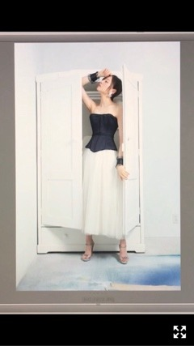
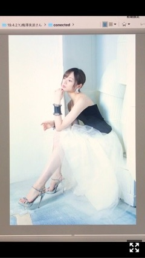

暑いのは苦手だけど夜の気温最高に好きです
みなさまこんにちは！！
乃木坂46の
梅澤美波です！
一時期この髪型ハマったなあ
この間久しぶりにしましたっ
平成から令和になりましたね
皆様いかがお過ごしですか？
ソファで音楽聴きながらゴロゴロしてたら
いつの間にか0時をまたいでました。
握手会で色々お話を聞いていたら
皆様エンジョイしていらして
急激に寂しい気持ちになりました。（笑）
テレビではカウントダウンしていたり
なんだか年明けみたいな気分だったなあ
平成１１年に生まれまして
２０年間全ての思い出が詰まってるので
なんだか寂しさも感じつつ、、
年号が変わるからといって
その記憶が無くなるわけでもないので
特別なことは特にないけど、
すごく不思議な感覚です
歴史的瞬間に立ち会えて
とても幸せです◎
平成にやり残したことは
きっと無いと、思いたい！
令和はたくさん笑って過ごしたいのです！
週刊ヤングジャンプ様
巻頭グラビアを務めさせて頂きました！
とっても嬉しいです(；；)！
部屋着カットです〜
シャツに短パン、シンプルで好きでした
ゴローンとしております。
このカットはカメラをあまり意識せず
リラックスしながら撮影できました︎︎︎︎✌︎
撮影もかなり楽しくって
衣装もどタイプなものばかり〜

ビスチェワンピース、
これかなりお気に入りでした
普段着ないような衣装を着られるので
グラビア撮影はとっても楽しいです

見て頂けたでしょうか？
ぜひ感想などお待ちしておりますっ
ゴールデンウィーク真っ只中ですが、
皆様なにをしているのだろう。
１０連休かあ、
街のどこへ繰り出しても
たくさんの人で溢れかえっている〜
旅行へ行きたいなあ。
ナナマルサンバツ！
ゲネプロ観劇してきました︎︎︎︎
とても面白かったです！！
私もクイズに参加しながら見られました！
ほぼほぼ不正解でしたが、、（笑）
ガチクイズの部分も、
キャストさん皆さんの本気が伝わってきて
素敵だったなあ。
たっくさん笑いました！
あやねさん演じる深見真理ちゃん、
最高に可愛くて綺麗でした、、
前作観に行けなかったので念願でした❤︎
あやちゃんもはづもたまみも
みんな本当に素敵だったなあ。
終わって会いに行ったら
ぎゅーっと寄ってきてくれるのが
最高に愛おしかった(；；)
千秋楽まで無事駆け抜けられますように！
最近はですね〜
ポトフに一時期ハマっていまして
かえでが泊まりに来た時に作ったら
おかわりしてくれたのです。
れんかちゃんが泊まりに来た時も
ポトフ食べたい！と言ってくれたので
作って食べてもらったら
れんかちゃんもおかわりしてくれたのです。
美味しく食べてくれる人がいる幸せ。
こんな幸せないですねえ。
昨日は無償に餃子が食べたくなったので
３０個ひたすら包みました。
食べきれない分は冷凍。
昨日は酸辣湯風スープにして食べました。
美味でした〜
20歳になった今年は
得意料理増やしていきたいですなあ
お知らせです！！
明日は、
▽日本テレビ系「ZIP！」
▽日本テレビ系「スッキリ」
▽日本テレビ系「バゲット」
に、真夏さん、高山さんと
出演させて頂きます！！
とても緊張しますが、、
お時間合えばぜひ見てください！
頑張ります！！
では！
また握手会の写真たち
更新しますね〜
Original：https://www.nogizaka46.com/s/n46/diary/detail/50479?ima=4944&cd=MEMBER